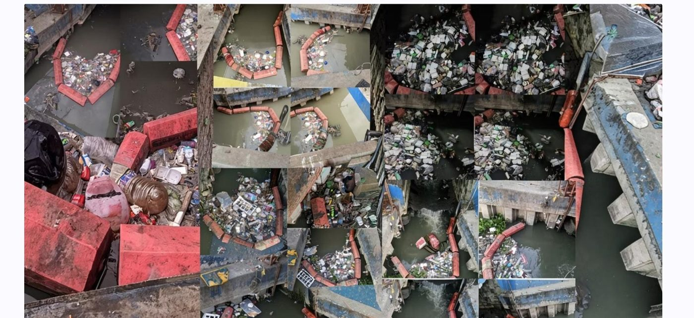

Catching the Tide
Evaluating the Effectiveness of Trash Trap Installations at the Ilaya Canal Network in Mandaluyong City
At a Glance
Research Summary
This descriptive-evaluative field study examined whether an existing floating trash trap along the Ilaya Canal actually performs as intended under real flow conditions. Through fourteen observation sessions between January 10 and 30, 2026, the study rated waste interception, gap leakage, overflow, structural instability, and flow disruption to determine how well the installation protects the canal network and downstream waterways.
Objectives
- Describe the current design, structural components, and placement configuration of the existing trash trap.
- Assess interception performance and common bypass patterns under varying observed flow conditions.
- Identify structural and placement limitations such as side gaps, overflow, misalignment, and instability.
- Recommend design and maintenance improvements that can increase capture efficiency and reduce waste leakage.
Context & Method
Installed trash traps often appear effective from a distance because they visibly retain floating debris. The field question, however, is whether they remain effective once water levels rise, currents intensify, or cage capacity is exceeded. This study situates the Ilaya Street canal segment within the larger drainage system leading toward the Pasig River and asks whether the existing device works as a reliable barrier or merely delays the movement of waste downstream.
- Research design: descriptive-evaluative field research with no manipulation of variables.
- Research locale: Ilaya Canal, Ilaya Street segment, Barangay Ilaya, Mandaluyong City.
- Observation period: 14 sessions from January 10 to 30, 2026 at varied morning and afternoon/evening times.
- Instruments: structured rating checklist, AR-ruler measurement attempt, photo log, and short key-informant interviews.
- Analysis: descriptive statistics using a 0–2 rating scale across five performance indicators.

Key Findings
- Structural instability registered the highest mean rating (1.79), indicating frequent movement or misalignment.
- Gap leakage averaged 1.71, showing that debris regularly bypassed the barrier through side openings or under floating components.
- Overflow averaged 1.41, meaning cage capacity and/or clearing schedule was often insufficient during heavier inflow periods.
- Waste interception averaged 1.29, suggesting only moderate capture of visible floating debris.
- Flow disruption averaged 1.00; the trap generally allowed water to continue moving through the canal.
Implications & Recommended Actions
- Seal or reduce side gaps using flexible skirting, overlap joints, or extended mesh panels.
- Reinforce anchoring and tensioning so the barrier retains its shape during stronger flow conditions.
- Increase holding capacity through larger or compartmentalized cages, and clear debris before overflow occurs.
- Keep a simple maintenance log that records clearing times, leakage incidents, and overflow observations.
- Extend future evaluations to more canal segments and add rainfall or flow context for stronger comparisons.
“The Ilaya Canal trash trap provides partial containment, but repeated leakage, instability, and overflow mean the current installation is not yet a dependable frontline barrier against floating waste.”